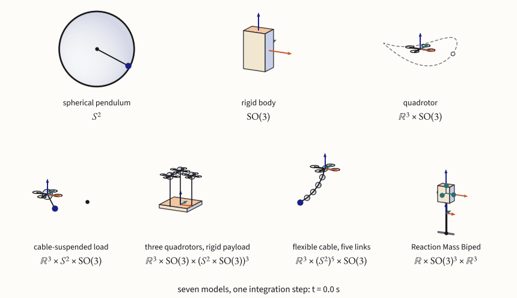
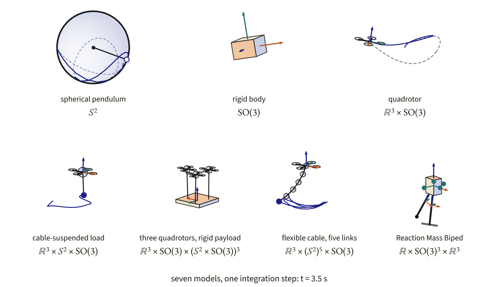
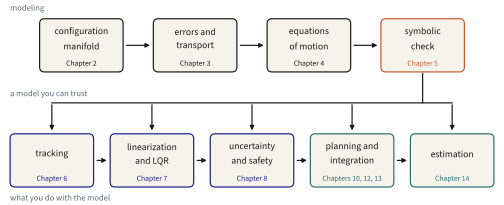
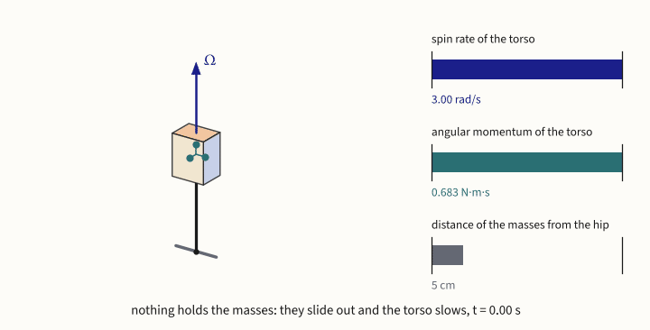
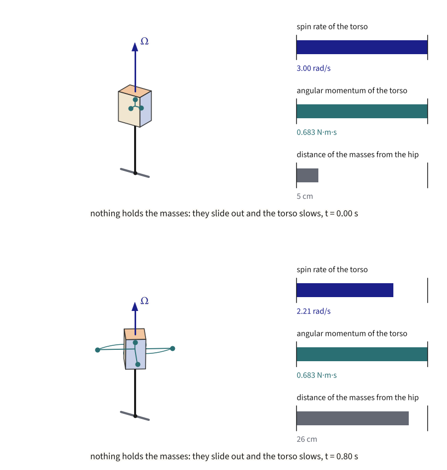

How it all comes together
Nature uses only the longest threads to weave her patterns, so each small piece of her fabric reveals the organization of the entire tapestry.
Here are three machines. A biped stands on one foot, with a torso that carries sliding masses. A quadrotor carries a load on a cable. A second quadrotor carries its load on a cable that sags, so we model the cable as five short links. Suppose you have written a simulator for the first. How much new code does the second need? And the third?
Count what the three have in common before you answer. The biped is three rigid bodies and a few lengths. The quadrotor with its load is a position, a cable direction and an attitude. The quadrotor with the sagging cable is a position, five directions and an attitude. Every item on those lists is one of three things: a vector, a direction, or an attitude (Figure 16.1).


So the answer is: an equation of motion, and nothing else. The integration step, the check that the state is still on the manifold, the energy audit and the symbolic verification are written once, for the three kinds of factor, and every machine in the figure uses the same ones. This chapter collects the robots of the book in one library built that way, and maps each of them to the places where the earlier chapters treat it.
16.1 One recipe
Each chapter so far taught one move and tried it on whichever robot showed it best. Put the moves in a row and they form a pipeline (Figure 16.2).

- Name the manifold. List the parts. A free position is a factor , a cable or a rod is a direction in , a rigid body is an attitude in (Section 2.7).
- Choose errors. Each factor comes with an error function, an error vector and a transport map (Table 3.2). You do not design them again.
- Derive the dynamics. Write the Lagrangian and the virtual work, vary each factor with its own variation, and read off one equation per factor (Definition 4.2).
- Check them. Derive the equations a second time by machine and compare at random states (Section 5.4).
- Track. A PD law on the error vector and the velocity error, plus feedforward, on each factor ((6.2), (6.12)). When the force must be aimed, nest the loops (Section 6.5).
- Linearize. Vary the equations along a solution to get a linear system in the variations, and design an LQR on it (Section 7.1, Section 7.5).
- Protect. Estimate what the model gets wrong, and filter the input so the state never leaves the safe set (Section 8.4, Section 8.6).
- Plan. Optimize over the error state, with steps taken by a retraction (Definition 13.5, Section 13.6), or plan in flat outputs (Section 10.6). Discretize the variational principle itself when the simulation must run long (Section 12.4), and use the discrete equations as constraints of a planner (Section 12.7).
- Estimate. Put the uncertainty in the tangent space and let the error live on the group (Definition 14.1, Definition 14.4). On a sphere, keep the estimate on the manifold and the covariance in the constraint subspace (Definition 14.5).
The steps never ask which robot you have. They ask which factors it has.
Thought experiment 16.1 (Count the factors). Before reading on, write down the configuration manifold of each of these: a satellite with a camera on a two-axis gimbal, a crane with a load on a cable, a quadrotor carrying a pole by a ball joint at its center. Then count the degrees of freedom and the inputs.
The satellite is an attitude and the camera’s pointing direction, , with five degrees of freedom. The crane is a trolley position and a cable direction, , with three. The quadrotor with a pole is , the manifold of the quadrotor with a cable-suspended load: only the mass distribution along the direction differs. Two machines with the same manifold share everything in the recipe except the Lagrangian.
16.2 The library
The folder case_studies/robots holds one Python module per robot. Each module is the single place where that model is written down, in the notation of Appendix A with the code names of Table A.15, and each has the same small interface:
import robots
robot = robots.get("quadrotor_load")
robot.manifold, robot.dim # "R^3 x S^2 x SO(3)", 8
robot.params # m_Q, m_L, l, J, g
state = robot.State() # x_L, v_L, q, omega, R, Omega
robot.dynamics(state, u) # accelerations, one per factor
robot.step(state, u, h) # one step that stays on the manifold
robot.energy(state) # kinetic plus potential
robot.on_manifold(state) # largest constraint violation
robot.lagrangian() # the model handed to the symbolic check
robot.labels # {"equations": "eq4-load", ...}The module of a robot contains its parameters, its state and its equations of motion. It contains no integrator. step is written once: it runs the stages of a fourth-order Runge-Kutta method on one increment per factor and applies the exponential update (4.20) at the end, so and hold to rounding error for any step size (Section 4.7). The symbolic check is also written once. For every robot it derives the equations of motion from lagrangian() with the library of Chapter 5, requires the check of Section 5.4 to pass, and compares the result with the hand-written dynamics at random states. Across the whole library the two agree to or better. Where Chapter 4 to Chapter 8 verified a function of their own for the same robot, the library is compared with that function too, so the code here and the equations in the book are provably the same.
Pitfall (On the manifold is not the same as right). on_manifold returning tells you that the state is a point of the manifold. It does not tell you that it is the right point. A sign error in an equation of motion gives a perfectly valid, perfectly wrong trajectory (Example 5.1). Check the energy with the inputs off, check a momentum that the model conserves, and check the equations against a second derivation. The library does all three for every robot, and you should do the same for yours.
16.3 The map
Table 16.1 and Table 16.2 are the index of the book by robot, in two parts with the same rows. Read along a row to follow one machine through the recipe. Read down a column to see one move applied to different manifolds. An empty cell means the book does not treat that robot at that stage. It does not mean the stage does not apply.
| Robot | Manifold | Dynamics | Symbolic check | Tracking | Linearization | Uncertainty, safety |
|---|---|---|---|---|---|---|
| Spherical pendulum | (2.1), Definition 1.5 | (4.5), (4.6) | Section 5.3 | (6.12), Proposition 6.3 | Proposition 7.1, Example 7.2 | Section 8.7, Example 8.4 |
| Rigid body, 3D pendulum | Definition 1.1, Definition 1.4 | (4.8), (4.12) | Exercise 5.3 | (6.2), Theorem 6.1 | Proposition 7.3, Example 7.4 | Section 8.4, (8.17) |
| Quadrotor | Section 2.6 | (4.15) | Proposition 6.4, Example 6.2 | Proposition 7.3 (attitude) | Section 8.8, Example 8.5 | |
| Quadrotor with a cable-suspended load | Figure 2.8, Example 2.2 | (4.16), (4.17) | (5.1), Example 5.1, Example 5.2 | (6.16) | ||
| Several quadrotors, one load or payload | Table 2.1 | (4.18) | Section 5.6 | Section 8.8 | ||
| Flexible cable | (5.6) | Section 5.6, Figure 5.10 | ||||
| Reaction Mass Biped | Table 2.1 | Example 4.3 | Section 6.7 | |||
| Cassie | Table 2.1 |
| Robot | Planning, integration | Estimation |
|---|---|---|
| Spherical pendulum | (12.12) | Definition 14.5, Example 14.2 |
| Rigid body, 3D pendulum | Proposition 13.3, Example 13.2, Proposition 12.4, Example 12.2 | Example 3.5, Theorem 14.3 |
| Quadrotor | Proposition 13.4, Proposition 10.2, Example 10.4 | Definition 14.4, Section 14.5 |
| Quadrotor with a cable-suspended load | Proposition 10.3, Example 10.3, Section 12.6 | |
| Several quadrotors, one load or payload | ||
| Flexible cable | Lemma 10.4, (10.11) | |
| Reaction Mass Biped | Section 12.5, (12.13) | |
| Cassie | Section 14.6 |
The upper rows are full and the lower rows are not, and that is the honest state of things. The pendulums and the rigid body are where each technique is first shown, because one factor is enough to show it. The large systems inherit the technique factor by factor, and the sections below say what has to be added for each.
16.4 Pendulums
A point mass on a massless rod, hinged at a fixed point. Its configuration is one direction , from the pivot to the bob. The equation of motion is (4.5),
and the rod’s tension is (4.6). Nothing here is hard, which is the point. The pendulum is the smallest system that has a curved configuration space and no group structure, so it is where the direction error, the tracking law (6.12), the constrained linear state of Definition 7.2 and the cone barrier of Section 8.7 are each introduced. It is also the cable of every aerial system below, before anything is attached to it.
pend = robots.get("spherical_pendulum") # m = 1 kg, l = 1 m
state = pend.State(q=np.array([1.0, 0.0, 0.0]), omega=np.zeros(3))
swing = pend.rollout(state, pend.zero_input(), 1e-3, 1000)
print(max(pend.tension(s) for s in swing)) # 29.43 N: three times the weight
print(max(pend.on_manifold(s) for s in swing)) # 2e-15Released from the horizontal, the bob pulls hardest at the bottom, with three times its weight. That is the worked example of Section 4.2, reproduced in three lines.
16.5 The rigid body
One attitude . Hinged at a pivot, with inertia about the pivot and center of mass at , the body obeys (4.12),
Set and it is Euler’s equation (4.8) with a torque: the attitude dynamics of every vehicle in this book. The library has both, as pendulum_3d and rigid_body. Siravuru (2019, ch. 4) uses the 3D pendulum to compare a geometric controller with one written in Euler angles, a comparison that Section 6.6 repeats.
What makes it hard is the topology and not the equation. No continuous controller stabilizes an attitude from everywhere (Theorem 1.3), and a guaranteed rate holds only on a sublevel set (Theorem 6.1). The attitude law (6.2) and the linearization (7.11) are exposed by the library as tracking_controller and linearize, and both are checked against the functions that verified those chapters.
book = robots.get("rigid_body") # the paperback of Chapter 4
spin = 2 * np.pi * 2.0 # two turns per second
state = book.State(R=np.eye(3), Omega=spin * np.array([0.01, 1.0, 0.01]))
flight = book.rollout(state, book.zero_input(), 1e-3, 6000)
flip = next(k for k, s in enumerate(flight) if s.Omega[1] < 0) * 1e-3
print(flip) # 0.88 s: the first half flip
print(np.ptp([book.momentum(s) for s in flight], axis=0).max()) # 4e-12This is the paperback of Section 4.5, spun about its intermediate axis. It reverses after 0.88 s, as it did there, and the world-frame angular momentum does not move.
16.6 The quadrotor
A rigid body that is free to translate, with a thrust along its own third axis and a body torque . The manifold is , stored as a position and an attitude, and the equations are (4.15),
Six degrees of freedom and four inputs. The force can only point along , so the vehicle must turn before it can accelerate sideways. That one fact shapes everything done with it. Tracking becomes a cascade: a desired force (6.13), an attitude built from it (6.14), and the attitude law inside (Proposition 6.4). Safety needs a barrier that knows about the attitude, (8.19), because the plain one cannot use the torque. Lee, Leok and McClamroch (2010) designed the cascade, and the default parameters of the library are their vehicle.
quad = robots.get("quadrotor") # the vehicle of Chapter 6
state = quad.State() # at rest at the origin
for k in range(4000):
ref = robots.quadrotor.circle_reference(k * 2e-3)
state = quad.step(state, quad.tracking_controller(state, ref), 2e-3)
print(np.linalg.norm(state.x - ref[0])) # 3 mm after 8 sThe vehicle starts at rest at the origin, 1.5 m from the circle of Section 6.5, and is on it to 3 mm eight seconds later.
16.7 The quadrotor with a cable-suspended load
Hang a point mass from the quadrotor’s center of mass on a massless cable of length . Read the manifold factor by factor: the load position , the cable direction from the quadrotor to the load, and the attitude . The quadrotor’s position is not a coordinate. It is . The equations of motion are (4.16),
Eight degrees of freedom, four inputs. Torque turns the body, the body aims the thrust, the thrust swings the cable, the cable pulls the load. Two things make this system hard. The first is that ladder: four of its degrees of freedom are reached only through the others (Figure 10.3), and the cascade (6.16) of Sreenath, Lee and Kumar (2013) has three nested loops whose rates must be separated. The second is the factor itself, which is an assumption. It says the cable is taut (the pitfall). The equations stay smooth when the tension (4.17) goes negative, and will then simulate a cable that pushes (the pitfall).
Wu (2017, ch. 3) derives this model and designs controllers on it. Chapter 5 opens with his equations and uses them to show what a symbolic check catches.
params = robots.quadrotor_load.chapter6_params() # 4.34 kg carrying 0.5 kg
robot = robots.get("quadrotor_load", params=params)
swing = robots.expm_so3(np.radians(40) * robots.E1) @ -robots.E3
state, target = robot.State(q=swing), np.array([1.5, 0.0, 0.5])
T_min = np.inf
for k in range(6000):
u = robot.tracking_controller(state, target) # eq6-load, eq6-Rd, eq6-law
T_min = min(T_min, robot.tension(state, u)) # eq4-load-tension
state = robot.step(state, u, 2e-3)
print(np.linalg.norm(state.x_L - target), T_min) # 1.0 mm, 4.17 N
print(robot.on_manifold(state)) # 3e-14This is the flight studied in Section 6.5: the cable starts 40° off the vertical and the load is sent to a target 1.6 m away. The library reproduces that flight: the load is 1.0 mm from the target after 12 s, and the tension never falls below 4.17 N, the 4.2 N quoted there. The listing watches the tension because the model cannot.
16.8 Several quadrotors and flexible cables
One quadrotor lifts little. Let of them share a point-mass load, each on its own cable . The manifold is and the equations are (4.18),
With one quadrotor they collapse to (4.16), and the library checks that they do. Replace the point mass by a rigid payload and the manifold gains the payload’s attitude: , of dimension (Table 2.1). Wu (2017, ch. 3) derives that model, and Kotaru (2022) reports experiments in which more than one quadrotor carries and controls a payload on cables. The book states the rigid-payload model in words and derives it by machine (Section 5.6). The library writes it out as the Lagrange-d’Alembert principle delivers it, one equation per variation, and solves the result as a linear system in the accelerations.
A real cable sags. Kotaru (2022, ch. 7) models it as a chain of short links with a point mass at each joint, and attaches quadrotors to some of the joints. Hang the chain from a fixed pivot instead and it is the chain of Section 5.6, on , whose equation for link is (5.6),
Let the first joint move and carry quadrotors, and the same matrix appears with one more row and column for the position of that joint. With a single link under a single quadrotor the model is (4.16) again, written from the quadrotor’s end. The library checks that too.
What makes these systems hard is the count. A cable of links between quadrotors has degrees of freedom and inputs. Kotaru shows that it is nevertheless differentially flat when a quadrotor holds the end of the cable (Lemma 10.4), derives its variation-based linearization, and tracks trajectories in simulation with a finite-horizon LQR on up to ten links. Each cable is also one more tension that must stay positive, and several vehicles must keep clear of each other (Section 8.8).
team = robots.get("multi_quadrotor_payload", n=3) # three quadrotors
state = team.random_state(np.random.default_rng(1), speed=0.5)
E0 = team.energy(state)
for k in range(1000):
state = team.step(state, team.zero_input(), 1e-3) # motors off: free fall
print(team.manifold, team.dim) # R^3 x SO(3) x (S^2 x SO(3))^3 21
print(abs(team.energy(state) - E0) / E0) # 6e-14
print(team.on_manifold(state)) # 9e-15cable = robots.get("quadrotor_cable", n=5, attach=(0, 5)) # five links
state = cable.random_state(np.random.default_rng(2), speed=0.5)
E0 = cable.energy(state)
for k in range(1000):
state = cable.step(state, cable.zero_input(), 1e-3)
print(cable.manifold, cable.dim) # R^3 x (S^2)^5 x SO(3)^2 19
print(abs(cable.energy(state) - E0) / abs(E0)) # 3e-11Twenty-one and nineteen degrees of freedom, with the motors off. Neither module has an integrator of its own, and neither state has left its manifold.
16.9 Legged robots
A leg that pivots about its foot is a 3D pendulum. Let it telescope and it is Example 4.3, on : with ,
This is (4.19), and its new feature is the inertia. depends on the configuration, and its rate appears in the equation as a term of its own.
Siravuru’s Reaction Mass Biped (2019, ch. 5) is built around that feature. On top of the telescoping stance leg sits a torso with its own attitude, carrying three pairs of masses that slide along its axes, and a swing leg with a third attitude. Every mass is balanced about the hip. The consequence is striking: the mass matrix is block diagonal, and the stance leg obeys (4.19) exactly, with the hip torque added on the right. The torso obeys an equation of the same shape, with an inertia that depends on the positions of the sliding masses in the way depends on . The library implements this stance model in full: thirteen degrees of freedom, all actuated. The configuration manifold of Table 2.1 has dimension fourteen. The fourteenth is the length of the swing leg, which does not enter the stance dynamics because the swing leg is balanced about the hip, and the library leaves it out. The impact at touchdown and the walking controller of the thesis (Section 6.7) are in a module of their own next to it, with which Chapter 20 makes the biped walk. The thesis integrates the model with the variational scheme of Section 12.5.
biped = robots.get("reaction_mass_biped")
p, I = biped.params, np.eye(3)
zero = np.zeros(3)
state = biped.State(l=0.5, l_dot=0.0, R1=I, Omega1=zero, RP=I,
OmegaP=np.array([0.0, 0.0, 3.0]), R2=I, Omega2=zero,
slide=np.full(3, 0.05), slide_dot=zero)
u = (p.m * p.g, zero, zero, zero, zero) # the leg holds the weight
momentum = lambda s: s.RP @ biped.torso_inertia(s.slide) @ s.OmegaP
mom0 = momentum(state)
for k in range(800):
state = biped.step(state, u, 1e-3)
print(state.slide[0], state.OmegaP[2]) # 0.26 m, 2.21 rad/s
print(np.abs(momentum(state) - mom0).max()) # 7e-14The torso spins at 3 rad/s with its masses free to slide. They are thrown outward, 5 cm to 26 cm in 0.8 s, and the spin drops to 2.21 rad/s while the torso’s angular momentum does not change in the twelfth digit (Figure 16.3). A walking robot can use that: it can change how fast it turns without pushing on the ground.


The same thesis (ch. 6) models Cassie with a floating pelvis in , one rotation matrix per leg and two leg lengths, fourteen degrees of freedom of which eight are actuated, and uses the model to plan and track turns in place on a pair of Hovershoes. The library carries the floating-base part of that model, derived from its Lagrangian and checked against the symbolic derivation. It does not carry the ground contact, which is what makes Cassie a walking robot and not a falling one, and the book does not state these equations. The estimation side of legs is further along: a foot on the ground joins the state as one more column of a group element, (14.17), and the filter built on it was tested on Cassie (Section 14.6).
16.10 Adding your own robot
The recipe, as a checklist. Each step names the skill that carries it out. The skills are the folders under skills/, and case_studies/README.md has the same list with the files to copy.
- Manifold and state. Write the configuration as a product of , and factors. Name the fields with the code names of Section A.1 and Table A.15. Skill:
ch02-manifold-kinematics. If a chart is tempting, runch01-manifold-diagnosticson it first. - Errors. Take the error function, error vector and transport map of each factor from Table 3.2. Skill:
ch03-geometric-error-design. - Equations of motion. Lagrangian, virtual work, one variation per factor. Write the result with the inertia on the left. Skill:
ch04-manifold-dynamics-modeling. - Module. Copy the module of the closest robot. Fill in the parameters, the state, the list of factors,
dynamics,energyandlagrangian. Do not write an integrator. - Verify. Two lines in
verify/robots.pyderive the model again and run the conservation checks. Add one more: a smaller model that yours must collapse to. Skill:ch05-geomech-symbolic-derivation. - Track and linearize. Add
tracking_controllerandlinearizewhen you have them, each citing the law it implements. Skills:ch06-geometric-tracking-control,ch07-variation-lqr-design. - Protect and plan. Skills:
ch08-adaptive-safety-design,ch13-manifold-mpc-design,ch10-flatness-trajectory-designwhen the robot has a flat output,ch12-variational-integrator-designfor long simulations and for transcriptions. - Estimate. Skill:
ch14-invariant-filter-design. - Map. Add a row to Table 16.1 and Table 16.2, with an empty cell wherever you have not done the work.
Step 5 is the one people skip, and the one that pays. Every model in the library was written by hand and every one was compared with a derivation it could not have influenced. One printed source had a sign that did not survive this comparison: the centrifugal term on the reaction masses, which must push them outward.
Four of these robots deserve more than a section. The quadrotor, the quadrotor with a cable-suspended load, collaborative transport and legged robots are each taken end to end, from the manifold to a flight or a walk, in the case studies that follow.
Exercises
Exercise 16.1. Add a second load. Hang a point mass from the first one on a second cable, so that the configuration manifold is . Write the Lagrangian, derive the equations of motion by hand, and add the robot to the library. It must collapse to (4.16) when the second mass is zero. Which existing model is it already, with which arguments?
Exercise 16.2. Model the cable of the quadrotor with a cable-suspended load as two links of half the length, with a small mass at the middle joint. Fly both models with the same thrust and torque history, starting from hover with a pitch pulse. How far apart are the two loads after 3 s, and how does the gap depend on the middle mass? What does the two-link model do that the one-link model cannot?
Exercise 16.3. Take a robot of your own, or the crane of Thought experiment 16.1: a trolley on a rail with a load on a cable, on . Carry it through steps 1 to 5 of Section 16.10. Report the result of the symbolic check, the agreement between your dynamics and the derived model, and the energy drift at two step sizes. By what factor should the drift fall when the step is halved?
Exercise 16.4. Plant an error in quadrotor_load: flip the sign of the term in (4.16). Which of the library’s checks fail, and which still pass? Explain why the manifold residual cannot see the error, and find an initial state from which the energy check cannot see it either (Example 5.1).
Exercise 16.5. For three quadrotors carrying a point-mass load, find thrusts that hold the system in equilibrium with the cables spread 20° from the vertical. Compute the three tensions from Newton’s law for each quadrotor. Then reduce one thrust slowly in simulation and find where the first tension reaches zero. What should a simulator do at that instant (the pitfall)?
Exercise 16.6. In the run of Figure 16.3, apply forces to the reaction masses that pull them back to 5 cm. How much work do the forces do, and where does it go? Then use the masses as an actuator: design forces that bring the spin rate of the torso from 3 rad/s to 2.5 rad/s and hold it there, with no torque at the hip.
Notes and sources
The models collected here come from three theses and the papers behind them. The quadrotor with a cable-suspended load, the point-mass load carried by several quadrotors and the rigid payload are derived by Wu (2017, ch. 3), following Sreenath, Lee and Kumar (2013) for the single vehicle. Kotaru (2022) treats the same systems with an eye to experiments, and in ch. 7 and its appendix B models the flexible cable as a chain of links carried by quadrotors, with its variation-based linearization. The Reaction Mass Biped and the reduced geometric model of Cassie are due to Siravuru (2019, ch. 5 and 6). His eq. (5.14) prints the centrifugal term on the reaction masses with the opposite sign to the one its own Lagrangian gives. The library uses the sign of the Lagrangian. The quadrotor and its tracking controller are those of Lee, Leok and McClamroch (2010), and the chain of spherical pendulums and the variational method throughout follow Lee, Leok and McClamroch (2018). Every model was derived a second time with geomech (Kotaru, 2026). The parameter values of the Cassie model in the library are placeholders, and its ground contact is not modeled.
- P. Kotaru, Dynamics & Control for Collaborative Aerial Manipulation, PhD thesis, University of California, Berkeley, 2022.
- P. Kotaru, geomech: symbolic equations of motion on smooth manifolds, version 1.1.0, 2026.
- T. Lee, M. Leok and N. H. McClamroch, “Geometric tracking control of a quadrotor UAV on SE(3)”, IEEE Conference on Decision and Control, 2010.
- T. Lee, M. Leok and N. H. McClamroch, Global Formulations of Lagrangian and Hamiltonian Dynamics on Manifolds, Springer, 2018.
- A. Siravuru, Geometric Control and Learning for Dynamic Legged Robots, PhD thesis, Carnegie Mellon University, 2019.
- K. Sreenath, T. Lee and V. Kumar, “Geometric control and differential flatness of a quadrotor UAV with a cable-suspended load”, IEEE Conference on Decision and Control, 2013.
- G. Wu, Safety-critical Geometric Control Design with Application to Aerial Transportation, PhD thesis, Carnegie Mellon University, 2017.